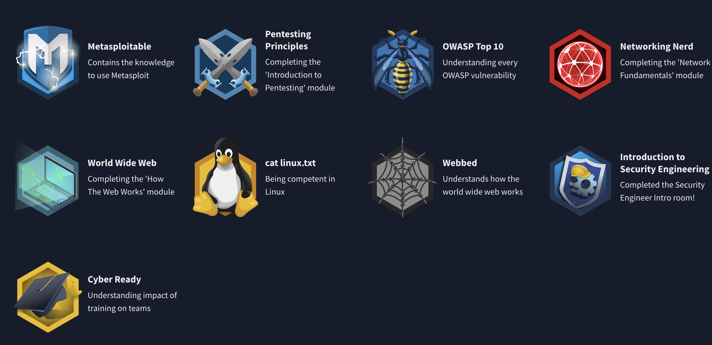

My TryHackMe Badges (Updated on 25/02/2025)
What is a CTF?
Capture The Flag (CTF) competitions are cybersecurity challenges designed to test and improve hacking skills. Participants solve challenges involving cryptography, web exploitation, forensics, reverse engineering, and more.
My TryHackMe CTFs
Here are the CTFs I have completed on TryHackMe:
- Advent of Cyber - A seasonal cybersecurity challenge event.
- Year of the Rabbit - A CTF focused on web application security.
- Internal CTF - Simulated internal network penetration testing.
- OhSINT - Open-source intelligence challenge.
- Blueprint - CTF focused on blue team techniques.
- Pentesting Principles - Completing the 'Introduction to Pentesting' module.
- cat linux.txt - Being competent in Linux.
- OWASP Top 10 - Understanding every OWASP vulnerability.
- Introduction to Security Engineering - Completed the Security Engineer Intro room.
- Networking Nerd - Completing the 'Network Fundamentals' module.
- Webbed - Understanding how the World Wide Web works.
- World Wide Web - Completing the 'How The Web Works' module.
- Cyber Ready - Understanding the impact of training on teams.
- Metasploitable - Contains the knowledge to use Metasploit.
Why CTFs Matter
CTFs provide hands-on experience in ethical hacking, helping improve problem-solving skills and security knowledge. They are a great way to prepare for real-world cybersecurity scenarios.
GitHub Pages
This repository is hosted using GitHub Pages to provide a visually accessible version of my CTF achievements.
View My TryHackMe Profile
Get in Touch
Interested in collaborating or discussing cybersecurity? Connect with me:
📧 Email: patryk.kieszek@gmail.com
💼 LinkedIn: Click here